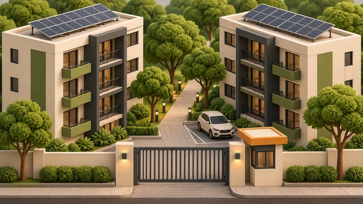
Proyectos IoT
Explorar ideas de proyectos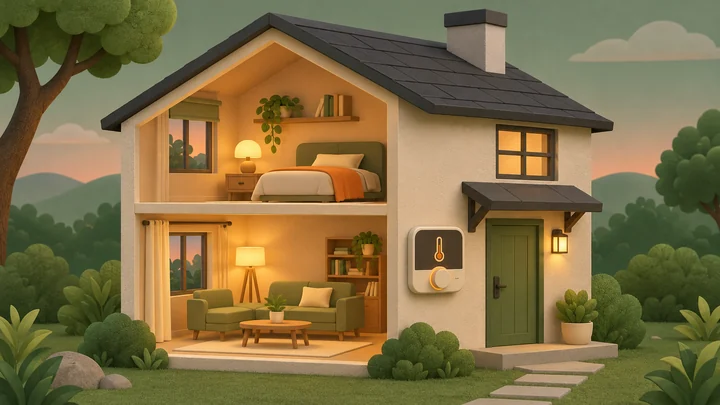
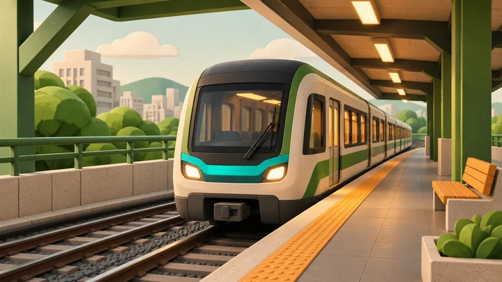
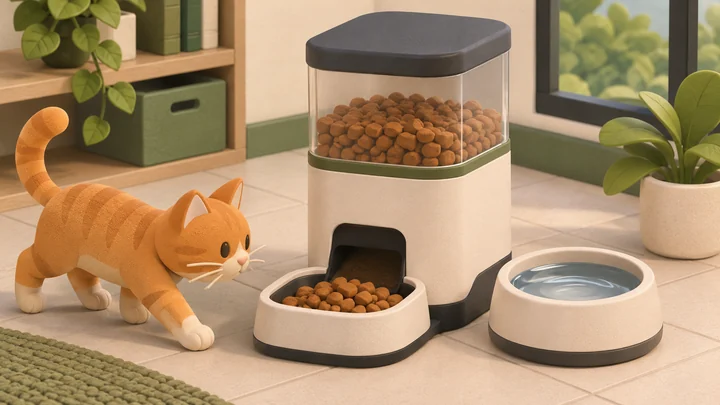
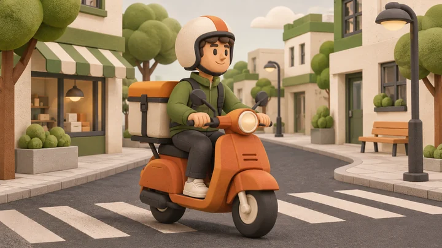
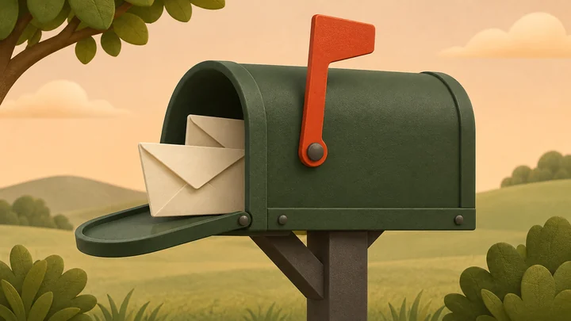
Juegos
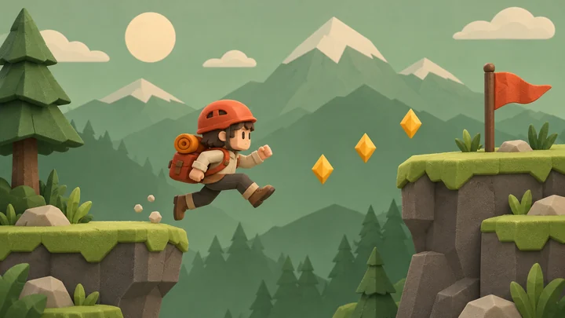
Cumbre
Un juego de plataformas para una persona con un tablero remoto.
- Saltos entre plataformas y puntos de reaparición
- Cinco balizas para recoger y una bandera como meta
- Controles y estado de la partida por MQTT
Propuestas de juegos
Para una persona
-
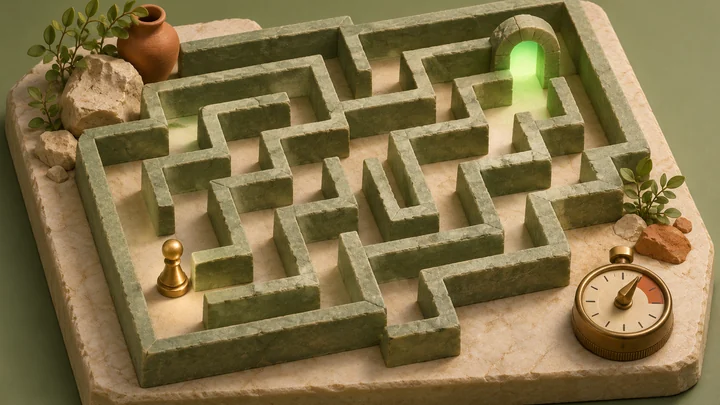
Laberinto contrarreloj
Encuentra la salida antes de que termine el tiempo. El tablero envía direcciones y muestra el tiempo y los intentos.
Jugar a Laberinto contrarreloj -
Órbita
Esquiva asteroides con una nave. El tablero controla el giro y el impulso y recibe el combustible y el puntaje.
Jugar a Órbita -
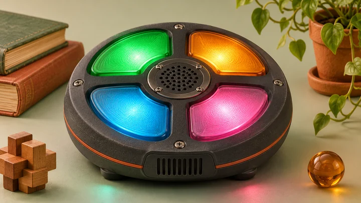
Memoria de señales
Repite secuencias de colores cada vez más largas. El tablero envía el color elegido y recibe la ronda y el resultado.
Jugar a Memoria de señales
Para dos o más personas
-
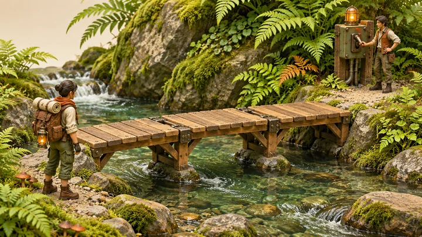
Puente a dos
Dos personas cooperan. Una mueve al personaje y la otra activa plataformas desde su tablero.
Jugar a Puente a dos -
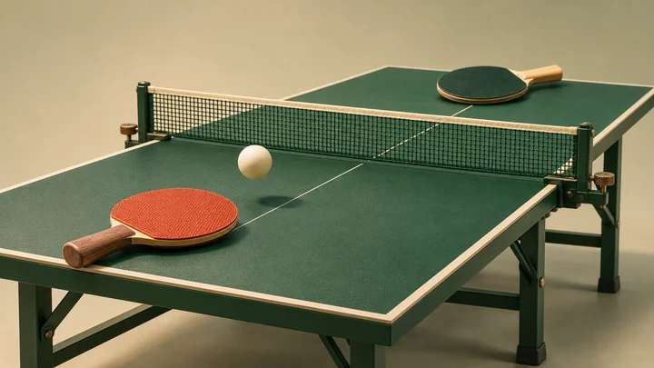
Pong en red
Cada jugador controla una raqueta desde su dispositivo. La sala comparte las posiciones de la pelota y el marcador.
Jugar a Pong en red -
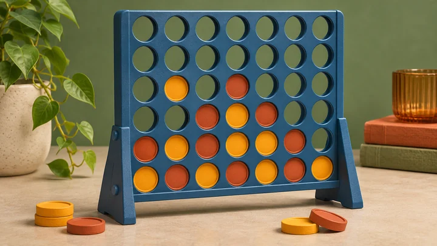
Cuatro en línea
Dos jugadores eligen columnas por turnos. MQTT comparte la jugada, el próximo turno y el resultado.
Jugar a Cuatro en línea -
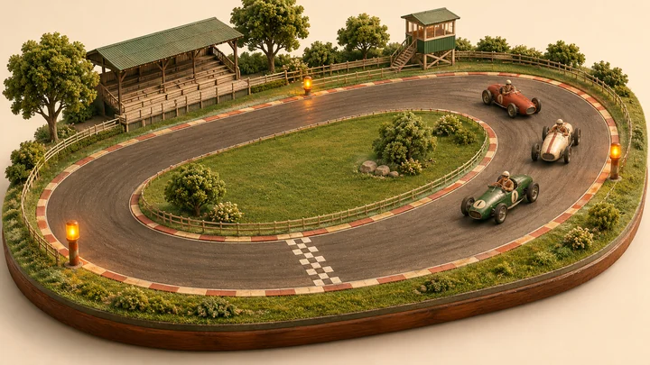
Carrera de balizas
De dos a cuatro jugadores recorren un circuito. Cada tablero muestra los puntos de control y la clasificación.
Jugar a Carrera de balizas